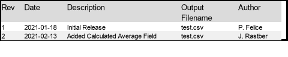

demo_file
Even More Random Container Name
I just want to write more random stuff here Inputs: dataset_a: WHOA dataset_b: AHH
Random Container Name
I just want to write some stuff here Inputs: dataset_a: AHH dataset_b: WHOA
Not Secure & Secure Dirs
AlteryxBasePluginsGui.TextInput.TextInput
List of Filenames user added (NS)
AlteryxBasePluginsGui.DbFileInput.DbFileInput
Batch File and List of Filenames
Batch File Preperation
This sets up a row in Alteryx that will be a batch file line for each file in the list of filenames Excel sheet. Each line in the batch file will move each of the files from the non secure location to the secure location.
AlteryxBasePluginsGui.AppendFields.AppendFields AlteryxBasePluginsGui.AlteryxSelect.AlteryxSelect AlteryxBasePluginsGui.Formula.Formula AlteryxSpatialPluginsGui.Summarize.Summarize AlteryxBasePluginsGui.Unique.Unique
Update List of Filenames (NS)
AlteryxBasePluginsGui.DbFileOutput.DbFileOutput